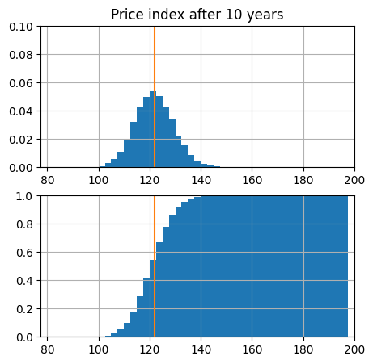

13.2. Risks#
Inflation risk
Interest rate fluctuations
Reinvestment risk
Rating, credit and defalut risks
…
13.2.1. Inflation risk#
Independently from any other mechanism, a change in inflation alters the real return of constant nominal yield bonds. Just as an example, if you buy a \(3\%\) nominal rate bond with expected inflation at \(2\%\), you’re aiming at \(1\%\) real return. If average inflation grows and remains constant at \(4\%\), you get a negative \(-1\%\) return.
%reset -f
import numpy as np
import matplotlib.pyplot as plt
#> Bond features
n_years = 10
r_nominal = .03
i_exp = .02
i_sdev = .02
#> Initial price
# r = (pend/pinit)**(1/years) - 1
bond_price_end = 100.
bond_price_ini = bond_price_end / ( 1. + r_nominal )**n_years
print(f"Final price: {bond_price_end: 6.3f}")
print(f"Initial price to get compound return r={r_nominal}: {bond_price_ini: 6.3f}")
#> Expected price index
pi_ini = 100.
pi_end = pi_ini * ( 1. + i_exp )**n_years
#> N.realizations
n_reals = 10000
Final price: 100.000
Initial price to get compound return r=0.03: 74.409
from functools import partial
#> Random number generator
i_rng = partial(np.random.default_rng().normal, loc=i_exp, scale=i_sdev)
#> Realizations of 1-year inflation
i_reals = i_rng(size=(n_years, n_reals))
#> Realization of price index: PI[n+1] = PI[n] * ( 1 + i[n] )
pi_reals = np.cumprod(1+i_reals, axis=0) * pi_ini
dbins = 2.5
bins = np.arange(80, 200, dbins)
fig, ax = plt.subplots(2,1, figsize=(5,5))
ax[0].hist(pi_reals[-1,:], bins=bins, density=True)
ax[0].plot([pi_end, pi_end], [0.,1.])
ax[1].hist(pi_reals[-1,:], bins=bins, density=True, cumulative=True)
ax[1].plot([pi_end, pi_end], [0.,1.])
ax[0].set_xlim(bins[0]-dbins, bins[-1]+dbins)
ax[1].set_xlim(bins[0]-dbins, bins[-1]+dbins)
ax[0].set_ylim(0., .1)
ax[1].set_ylim(0., 1.)
ax[0].set_title(f"Price index after {n_years} years")
ax[0].grid()
ax[1].grid()
